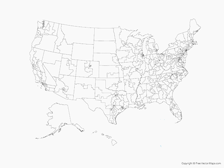

New Hampshire’s 2020 election results look a little odd. The state voted for the Democratic nominee, as it has done in the past five presidential elections, and reelected its all-Democratic congressional delegation. But the state government is now deep red: the Republican governor cruised to an easy reelection and the GOP took back control of both chambers in the state legislature.
At the state level, three institutions matter: the governor, state senate, and state house (sometimes called assembly). If a party controls all three, like Republicans in New Hampshire, they have a "trifecta" and can pass laws without support from the other party.
In the 2020 election, Democrats won the presidency and both chambers of congress, but Republicans won more control at the state level:
23 states, amounting to 41% of the U.S. population, are controlled by a conservative “trifecta”, where Republicans control all three institutions of state government: the governorship, state senate, and state assembly or house. Democratic trifectas govern only 15 states, amounting to 37% of the country. In the remaining states, control is split, but Republicans have an edge in most cases, controlling two of the three institutions.
If we arrange states from left to right according to their vote in the presidential election, we can see that New Hampshire is not alone - Republicans have full control of the state government in multiple states that voted for Biden.
Part of this is due to Trump's weakness as a candidate: on the whole, state-level Republicans got more votes than the former Preident. But it is also a result of gerrymandering, where the party in control of a state government draws district boundaries to pack opposing voters into as few districts as possible, giving their candidates an advantage. This is part of the reason Republicans did so well in New Hampshire - they drew the boundaries during the last redistricting process, when they controlled the state government in 2011.
The Republican advantage isn't overwhelming: this is a familiar map, with bluer states on the coasts. But getting to this point was a multi-generational GOP project.
After the Watergate scandal in the 1970s, Democrats swept to power in state houses across the country, winning trifectas in X states.
Over the next two decades, Republicans made uneven gains, then broke through in the “Republican Revolution” of 1994. Tktk about how Republicans managed to do this tktk.
In the 2000s, Democrats regained some ground, and at the start of Obama’s presidency still enjoyed a significant advantage in state houses.
Recognizing the importance of controlling state legislatures in 2011, Republicans decided to invest heavily. The Republican State Leadership Committee, the GOP’s fundraising arm focused on the state level, invested $32 million in state elections, a 50% increase over their spending in the 2008 cycle. By contrast, the Democrats' committee spent only $11 million, a decrease from 2008.
The result was an electoral massacre, with the GOP flipping X chambers as part of the 2010 wave.
This gave Republicans trifectas in 20 states amounting to 44% of the population. Crucially, their victory happened just before the 2011 redistricting process, meaning each trifecta immediately had the chance to new district boundaries that would last until 2020.
In 2020, hoping for a blue wave, Democrats invested heavily in state-level races, but had little to show for it, with the map largely unchanged since 2010.
The effect all this has on policy is enormous. In some policy areas, state governments have more power than the federal government.
One of the most important is redistricting, where new congressional district bounaries are drawn every ten years after each census. Some states defer to an independent redistricting commission, but some allow state governments to draw boundaries. Republicans have been highly successful in tktktk
